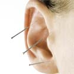
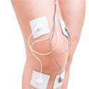
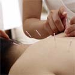
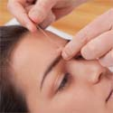

Willkommen auf meiner Website!
Flexible Ordinationszeiten nach telefonischer Vereinbarung
Akupunktur
Seit 1986 als wissenschaftliche Heilmethode durch den Obersten Sanitätsrat Österreichs anerkannt
WeiterMoxa Therapie
Wärmebehandlung von Akupunkturpunkten durch Abbrennen von getrockneten und fein geriebenen Fasern von Beifussblättern
WeiterAktuelle Meldungen
Hier finden Sie derzeit aktuelle Artikel/Berichte aus Fachmagazinen
- 
-
Akupunktur zur Geburtsvorbereitung
Durch Akupunktur in den letzten Wochen der Schwangerschaft ist eine Verkürzung der Geburtsdauer möglich. Die wissenschaftliche Beweislage ist allerdings noch unzureichend.
- 
-
TENS bei Übelkeit und Erbrechen in der Schwangerschaft
TENS (Transcutane elektrische Nervenstimulation) kann bei schwangerschaftsbedingter Übelkeit und Erbrechen mithilfe des kleinen TENS-Gerätes und Verwendung von Klebeelektroden zu Hause durchgeführt werden.
- 
-
Wie wirkt Akupunktur?
Durch Akupunktur kommt es zur Ausschüttung von körpereigenen schmerzhemmenden Substanzen
- 
-
Akupunktur bei Kopfschmerzen
Akupunktur reduziert die Häufigkeit von Migräne-Anfällen und Spannungskopfschmerz-Tagen.